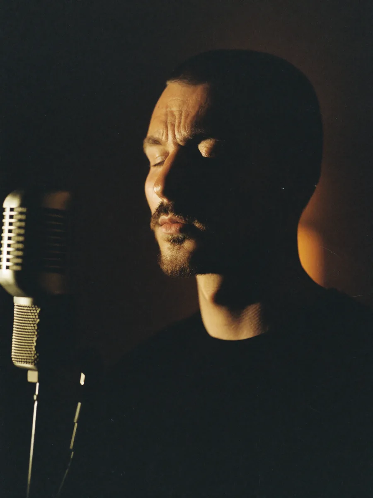
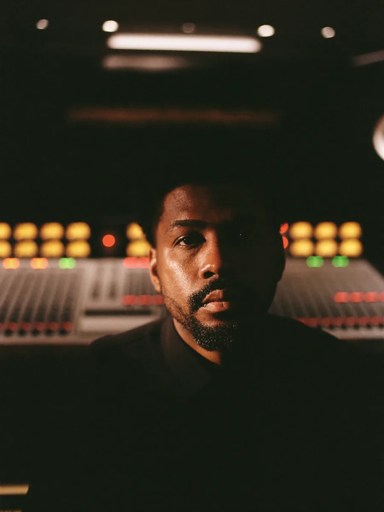

Вокал
Вокальная позиция, опора, прогрев, высокие ноты, бэлт, микст, субтон, дикция. Индивидуально и в малых группах.
Прояви · пространство для проявления через голос. 6–8 недель индивидуальной работы с командой музыкантов, психологов и практиков.
Не курс вокала — практика свободного голоса как канал к себе.
Бесплатно · с куратором
Голос — не вокальная мышца. Это то, через что ты вообще существуешь среди людей.
Когда он свободен — свободен ты.
Когда зажат — ты тоже.
Мы не учим петь.
Мы возвращаем тебе твой звук.
Голос — самый честный диагностический инструмент. Он показывает, где ты зажат, где боишься, где себя не слышишь.
Свобода голоса — это свобода тела плюс свобода психики. Поэтому мы работаем со всеми тремя слоями одновременно.
Это про то, чтобы звучать собой. Тихо или ярко — твой выбор. Но звучать своим звуком, а не чьим-то.
Если хоть одно «да» — этот текст про тебя. Это не «недостатки характера». Это голосовые и телесные блоки — они снимаются. Системно.
Под тебя подберём маршрут. С чего стартовать, что добавить, что отложить — решаем после бесплатной диагностики.
Вокальная позиция, опора, прогрев, высокие ноты, бэлт, микст, субтон, дикция. Индивидуально и в малых группах.
Дикция, артикуляция, темп, интонация. Для тех, кто говорит публично или ведёт встречи.
Как держаться в кадре, голос для Reels, мимика, «я в порядке здесь и сейчас».
Страх осуждения, перфекционизм, имидж артиста, личные границы. С психологом по самовыражению.
Соматика, дыхание, голосовые медитации. Снимаем физические зажимы, блокирующие голос.
Для тех, кто пройдёт путь — продакшн в студии: аранжировка, запись, мастеринг. От первой ноты до релиза.
Прояви — это не курс. Это маршрут.
Мы не выдаём план «35 уроков и диплом». Мы собираем под тебя индивидуальную программу — какие из шести направлений тебе важны, в каком порядке, с какими специалистами.
У одного — вокал плюс психолог. У другого — речь плюс камера плюс соматика. У третьего — все шесть параллельно с финалом в виде записанной песни.
Один путь — твой звук.
Шесть способов туда дойти.
Команда — не один лицевой бренд, а несколько практиков с разными подходами. Под тебя подбираем тех, с кем стартует лучше всего.


Целевые сегменты, под которые мы собираем маршруты. Не обязательно подходить под один — у многих сочетания.
«Внутри есть, наружу не выходит». Голос — способ выйти из тупика и снова почувствовать что ты живой.
Карьера в порядке, но ощущение зажатости. Хочешь публичности, но боишься. Хочешь говорить от себя — не от роли.
Знаешь что говорить, но не можешь записать видео без 15 дублей. Камера парализует. Голос «не твой».
Без чёткого «зачем». Через голос — самый прямой способ найти. Голос не врёт, в отличие от слов.
Истории учеников — что было до и что стало после. Карта проявленности замеряется в начале и в конце маршрута.
Раньше я говорила тихо и быстро, чтобы скорее замолчать. Сейчас я выступаю и веду свой канал — и впервые слышу себя.
| Свобода голоса | 2 → 5 +3 |
| Свобода тела | 3 → 5 +2 |
| Контакт с собой | 2 → 4 +2 |
| Выражение | 1 → 4 +3 |
| Границы | 2 → 4 +2 |
| Публичность | 1 → 5 +4 |
Я думал — мне нужны уроки вокала. Оказалось, мне нужны были и психолог, и практик, и педагог. Сейчас записал свою песню.
| Свобода голоса | 1 → 4 +3 |
| Свобода тела | 2 → 4 +2 |
| Контакт с собой | 3 → 5 +2 |
| Выражение | 2 → 5 +3 |
| Границы | 3 → 5 +2 |
| Публичность | 2 → 4 +2 |
Камера меня парализовывала. Сейчас я веду блог 4 раза в неделю и понимаю — у меня просто не было голоса.
| Свобода голоса | 2 → 5 +3 |
| Свобода тела | 1 → 4 +3 |
| Контакт с собой | 2 → 5 +3 |
| Выражение | 3 → 5 +2 |
| Границы | 2 → 4 +2 |
| Публичность | 3 → 5 +2 |
Бесплатная диагностика — без давления и продаж в звонке. Куратор задаёт вопросы по нашей карте проявленности и подбирает специалиста.
Имя, мессенджер, одно предложение «что хочешь раскрыть». Минимум полей — займёт минуту.
15-минутный созвон. Без продаж, без давления. Куратор задаёт вопросы по карте проявленности.
Твоя карта проявленности, приоритеты на месяц и подобранный специалист, с которого старт.
Цены индивидуальные — зависят от выбранного маршрута. На бесплатной диагностике куратор покажет, что подходит и сколько стоит.
Для тех, кто хочет «попробовать прежде чем».
Для тех, кто решил пройти путь.
Для тех, кто решил дойти до результата.
Если твой вопрос не покрыт здесь — куратор ответит на бесплатной диагностике.
Прояви — международная программа. Юрлицо зарегистрировано в Таиланде. Работаем с учениками онлайн из любой точки мира. В команде — практикующие музыканты, психологи и кураторы. Не «школа имени одного человека», а сообщество специалистов вокруг общей идеи.
Если хоть что-то из этого текста про тебя — стоит провести 15 минут с куратором. Бесплатно, без обязательств.
Услышать себяС тобой свяжется куратор в течение дня — будем настраивать звук.